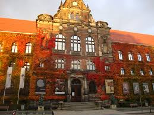
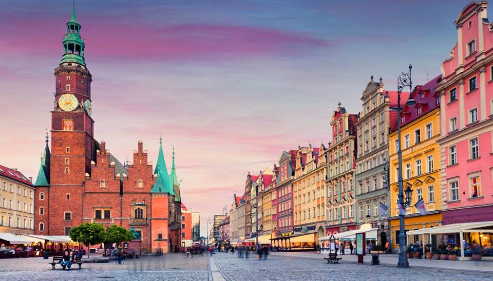
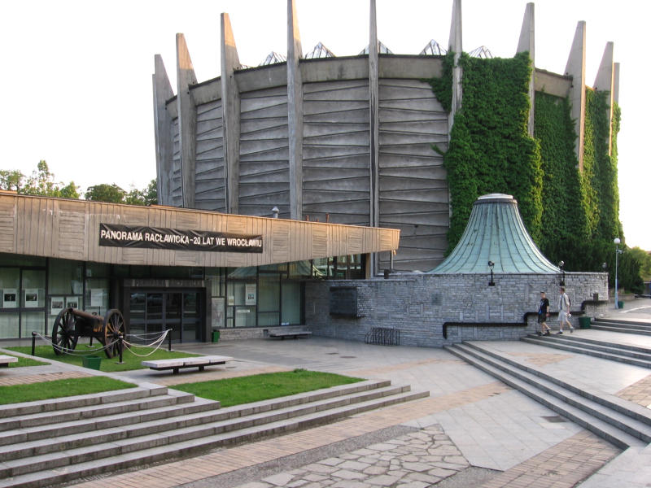
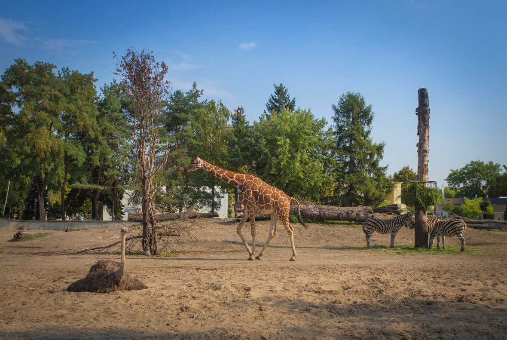

Wrocław to polskie miasto na prawach powiatu w południowo-zachodniej Polsce.
Jest 4. największym polskim miastem pod względem liczby ludności, a także największym miastem włączonym do polski w ramach tzw. Ziem Odzyskanych po II Wojnie Światowej.
Tabela ludności Wrocławia w wybranych latach XX i XXI w.
| 1910 r. | 512 105 |
| 1939 r. | 629 565 |
| 1946 r. | 170 656 |
| 1955 r. | 378 619 |
| 1965 r. | 474 199 |
| 1975 r. | 575 890 |
| 1985 r. | 637 207 |
| 2019 r. | 641 607 |
Został założony w X wieku, natomiast prawa miejskie zyskał najpóźniej w 1214 r. Jego najpopularniejszymi atrakcjami turystycznymi są:
Muzeum Narodowe
Jedno z najważniejszych muzeów Śląska, a także wyjątkowo ważna dla nas skarbnica kultury polskiej i śląskiej.
Zostało założone 28 marca 1947 roku, a od tego czasu zgromadziło ponad 200 000 wszelkiego rodzaju dzieł sztuki, takich jak obrazy, rzeźby, a także inne dzieła kultury.
Rynek
Wrocławski rynek jest jedną z najbardziej charakterystycznych cech miasta. Ma ponad 3,8 hektara, co czyny go jednym z największych placów targowych w Polsce.
Jego cechą charakterystyczną jest mnogość kamiennic otaczających rynek.
Najważniejszymi punktami orientacyjnymi jest Fontanna, pomnik Aleksandra Fredry, Ratusz, a także Pręgierz.
Panorama Racławicka
Panorama Racławicka jest jednym z najbardziej znanych obrazów w Polsce.
Dzieło m.in. Wojciecha Kossaka, Tadeusza Popiela, Teodora Axentowicza i Włodzimierza Tetmajera, pod przewodnictwem lwowskiego malarza Jana Styka
upamiejątniące bitwę w jej setną rocznicę ma imponujące wymiary 114 m x 15 m. Dzieło polskich artystów jest inspiracją dla wielu podobnych dzieł m.in. w Chinach.
Wrocławskie ZOO
Wrocławskie ZOO jest największym, najstarszym i najbardziej znanym ZOO w Polsce. Tytuły te potwierdza liczba gości odwiedzająca ogród - w 2018r. ZOO zostało odwiedzone przez blisko
1.6 mln zachwyconych gości. Jego najbardziej znanym i cenionym punktem jest Afrykarium, wyjątkowe oceanarium prezentujące zwierzęta zamieszkujące Afrykę.